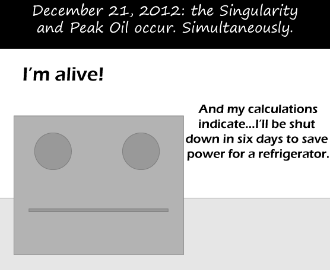

Comic JK 615
When I Feel Like It
⇤
<
?
>
⇥

⇤
<
?
>
⇥
Forum
.
RSS
.
Digg
.
Facebook
.
Reddit
.
Twitter
.
Stumbleupon
Enter your thoughts on number 615 here. Please, no spamming, trolling, or phreaking or being alive( Ok, I think this comic contains so many references I don't get, that I'll crouch into a corner and weep... +1 > You haven't heard of the singularity OR peak oil OR 12/21/12????? What century are you from? >> More to the point, what century are you _in_? >>> Is 12/21/12 the date the world's supposed to end? I so far only knew of the year 2012 and paid no further interest to this obscure but obviously more popular than I anticipated so-called prophecy. And I honestly have no idea what "peak oil" is supposed to be. And with singularity I can only assume you mean the hypothetical danger of creating a black hole at CERN. And I still have no idea, what this alive-thing is talking about.... But maybe that's just because English is not my first language and I don't live in an English-speaking country. I think, I simply carry on weeping... >>>> Singularity essence: artificial general intelligence research creates a thinking machine smarter than our combined intelligence. this is a logical result as soon as an AI is smart enough to create a smarter AI. >>>> Peak oil essence: our non-renewable natural resources are exhausted. We rely on surplus energy and petroleum products so heavily that civilization collapses. >>>>> Thank you very much! That really helped a lot, especially correcting my misconception about the singularity :) *wipeseyesdry* >>All these misspellings make red appear under the words. All this red makes my eyes hurt One of the best in a while. The art's not so good, but the premise is great. If it's a transhuman AI, it could take over the world in six days. >Not without IO devices >>Not unless it invented IO devices from ITS ELECTRICITY. >>>This is actually very probable. It would draw in dust with its fan and then, using its electricity, it would move the particles to specific locations to form whatever object it needs. >>>> "I have made ... a few things." >>>>>You win one internet. >>> > "very" is perhaps the worst adverb to apply to "probable" in that proposition. If it's a beer fridge I won't really mind. > ALL fridges are beer fridges. How are these not filled with spam?